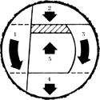

Barnacle Parp's Chain Saw Guide
Bucking, felling a small and large tree.
January/February 1979
This is the second of two excerpts. The first installment, which appeared in MOTHER NO. 54, covered basic use of the chain saw.
Excerpted from BARNACLE PARP'S CHAIN SAW GUIDE by Walter Hall, copyright © 1977 by the author, Permission granted by Rodale Press. Available in hard cover or in paperback from any good bookstore...or in paperback for $7.95 plus 95 cents shipping and handling from Mother's Bookshelf, P.O. Box 70, Hendersonville, N.C. 28739.
BUCKING
Lately we've been practicing with our saws out on the backyard woodpile, and we have the feel of them now. We've gotten used to cutting small logs, in easy-to-handle situations, such as propped up on our sawbuck with one end free.
But out there in the woods we're going to be cutting all sizes of timber, under all kinds of conditions. How do we avoid limbs that snap back and logs that roll? We'd better take some time for a look at a number of different woodcutting situations.
Our plastic and aluminum wedges will be useful tools. In many cases, simply using a wedge will save a saw from being pinched in a cut.
But suppose we have a really huge log that's supported on one end. How do we keep it from splitting or tearing when we cut through it?
The first thing to consider in any woodcutting problem is the stress factor. What is the direction and nature of the stress?
With a huge log supported on one end, and our cut coming just on the free side of the support, we need to minimize the amount of stress at the moment the cut becomes complete. A wedge won't do any good in this case. In fact, using a wedge would only increase the stress from above.
Let's start from the bottom of the log and cut upwards, with the top part of our guide bar. If we cut some of the diameter of the log from underneath, say about a third, then we can finish it from above with just one more cut and the stress will be considerably lessened. In other words, we'll start with a one-third underbuck and finish with an overbuck.
Remember always to work on the uphill side of the log and use a good stance. Place feet far enough apart to allow a comfortable but firm and balanced center.
Now suppose our large log is supported on both ends. The weight is on the lower half of the log, below our cut. To avoid a splitting log and a pinched bar, begin this cut with a one-third overbuck. Finish with an underbuck and be careful to exercise firm control of the saw. Make both cuts at a slight angle so the bar isn't pinched in the kerf when the log settles. Another trick to avoid pinching the bar is to make the cuts so that they aren't directly opposite each other.
If you're going to buck a log that's lying fairly flat on the ground, so that the piece of wood is supported for almost its entire length, there's no way to underbuck it. In that case, use a wedge to keep the kerf open and avoid pinching the bar. Remember to stand uphill and don't let your chain hit the ground.
Now let's say we have two logs that are larger in diameter than the length of our guide bar. In both of these cases we'll have to make a number of cuts in sequence. The idea is to leave a break-off hinge of uncut wood, and the exact placement of that hinge depends upon the source and direction of stress.
Our first log is supported on both ends. To buck it, make one cut on the far side of the log. Then overbuck to leave a hinge in the upper third. The third cut on the close side of the log brings the saw into position for the fourth cut, an underbuck. Finish with a fifth cut, back up to the underside of the hinge. Watch your feet.
The second log is supported on one end, so we will want our hinge in the lower third of the log to prevent splitting. Begin the first cut on the far side of the log, as before. Make the second cut an underbuck to form the hinge. The third, fourth, and fifth cuts reverse the previous operation. Watch the saw this time.
Many of the logs you'll want to saw will be lying flat on the ground. The easiest way to cut such timbers is with a series of overbucks on one side. Then roll the log over and finish the cuts by overbucking from the other side. Again, use wedges to avoid pinching the bar.
In all cutting situations let the saw do the work. If it's sharp and in good running condition you won't have to apply much force at all. Remember to begin any cut close to the bumper or bumper spikes and then allow the saw to pivot on that point. When you cut using this basic pivot motion you maintain maximum control and avoid most kickback and push-pull potential.
FELLING A SMALL TREE
Now let's practice cutting down a small tree. Pick one that's fairly straight, so we can control the direction of its fall. It's very difficult to fell a tree against the direction of its lean. Also, we want a tree that we're sure will fall in a direction away from powerlines, buildings, parked cars, and other obstructions.
Study the tree first, carefully, as you're walking toward it. Try to estimate its center of gravity. Now make sure that no one will come within the radius of the tree in any direction. Then clear a large area all around the tree. Clean away any debris that could catch fire and cut any limbs that you might fall over. Brush can also cause kickback if it comes in contact with the nose of the bar.
Clear an escape route away from the planned direction of fall and at a 45° angle to it. Don't plan on running directly opposite to the direction of fall, since the tree may well fall exactly opposite the way you planned.
There are two basic cutting operations involved with felling any tree. These operations, which may be altered or complicated by the size of the tree, the lay of the land, and the required direction of fall, are the notch (or directional cut) and the felling cut (or backcut).
The notch determines and controls the direction of the tree's fall. The felling cut removes most of the wood still holding the tree and causes it to break and topple. The notch and the backcut must always be made so as to form a hinge of uncut wood. As the tree falls, it pivots on this hinge, breaking it.
First, we make our notch. The basic notch for felling a small tree is made with two cuts. Make the upper of the two cuts first, to avoid pinching the bar. It's a drag to dig a saw out of a tree with the tree's full weight pressing down on it.
Move to one side of the tree, facing the planned direction of the fall. Aim across the top of your saw, along your front handle or falling sights (ribs cast into housings or covers on the saw), at exactly the place where you want the tree to fall. This will correctly line up your guide bar with the trunk.
Now make the upper cut of your notch, cutting down at an angle. Out at least a third of the way into the tree, but not as much as halfway. Then make the lower cut. With a small vertical tree on level ground, make this second cut straight in to meet the first. Make the cut horizontal, and cut clear back to remove the whole notch. The hinge will be formed by uncut wood at least two inches thick between the back of the notch and the felling cut.
Now go behind the tree and make another horizontal cut, two inches or more above the lower part of the notch. It is extremely important not to make this second cut meet the horizontal notch cut ... it must be an inch or two higher. It is also important not to cut through the hinge wood.
When enough of the felling cut is complete, stop your saw and leave it in the cut. Insert a wedge in the cut to prevent it from closing on your saw and to help control the direction of the fall toward the notch. Then start your saw again and continue until the cut is complete, leaving only the hinge.
At this time the tree should fall. If not, give it a little push, or use a felling lever. As the tree starts to move, leave your saw on the ground and retreat quickly along your planned escape route. Remember that the butt end of the tree may kick backwards and that unseen dead branches may fall straight down, or in any direction, as the tree topples. Take no chances. Retreat quickly and without hesitation.
That's how you cut down a tree when the diameter of the trunk is less than the length of your guide bar. But we're also going to be felling trees with diameters equal to or larger than the length of our guide bars, requiring a specific sequence of cuts.
Finish cutting initial wedge out, making sure the lower cut meets the upper one exactly.
Basic procedure for the first directional cut in felling a thick-stemmed tree
FELLING LARGE TREES
To cut a tree with a diameter larger than the length of your guide bar (but not twice its size), use the following method. And exercise great caution, because the technique involved is beyond the novice's reach.
Make a notch, as before ... it may, however, require four cuts to complete. You should make one half of the upper notch cut on one side and then move to the other side of the tree to complete it. Do the same with the horizontal cut.
After the notch is formed, make a plunge-cut an inch or two above it and on the opposite side of the wood that will form the hinge. Start the plunge-cut with the underside of the tip. When the bar has cut a few inches into the tree, straighten the saw to begin sawing straight inward from the tip of the bar.
When your plunge-cut is about halfway into the tree and about twice the width of your guide bar, proceed to make the felling cut by sawing around the trunk. Make a pivot with the tip of the guide bar in the center of the tree. Be careful not to cut into the hinge wood and be sure to insert your wedge or felling lever in plenty of time to force the tree in the right direction. If you use a felling lever, be careful not to hit it with your saw. If you use wedges, they should be made of plastic or hardwood.
To fell a tree with a diameter equal to or greater than twice the length of your guide bar, only one additional cut is necessary. In this case the extra cut is in the notching operation and, in effect, cuts the hinge itself in half.
Make the notch, as before. Now make a plunge-cut at the back of the notch, right in the center of the tree. The plunge-cut should be at least twice the width of the guide bar.
Cutting a plunge at the back of the notch in this manner actually creates two hinges. Make another plunge-cut at one side of the trunk and on the felling-cut side of the hinge. The cut meets the plunge-cut that comes through the center of the notch. Continue the felling cut by sawing around the tree with the tip of the bar in the center of the trunk. Place your wedges or felling lever in plenty of time and be careful not to cut through the hinge.
Note that if you fell a large tree on a slope, you should make the bottom notch cut at an upward angle to provide more control during a longer fall.
|
When crosscutting logs supported on one end, make two cuts in this sequence. |
When crosscutting logs supported at both ends, make two cuts in this sequence. |
 If cutoff section is likely to settle and bind against the blade, make cuts on an angle so the cut opens up. |
|
When a log is supported under, both ends, never allow saw blade to get pinched in the cut by trying to cut through the timber in one pass. Always cut it on the compression side first and the tension side last. |
 When stems, supported at both ends, are thicker than guide bar length, cut in this sequence. |
When stems, supported on on, end. Are thicket, than guide bar length, cut in this sequence |
|
Two hints for crosscutting a felled tree with stem thinner than guide bar length, and supported at both ends |
On a small tree, put the bumper of the saw to the log directly behind the hinge and make a fanlike felling cut |
To fell trees with a diameter exceeding the bar length, start with the notch cut, in about 113 the tree's diameter. Finish with about three fanlike cuts, changing fulcrums as little as possible. |
 To fell big trees with a diameter exceeding twice the bar length, start by carefully making a plunge-cut into the center of the tree, making sure to press nose of bar into the log until the guide bar is into the wood double its width before making the bor |
Second, speed up engine and press the bat, nose against the wood, then slowly pivot the. engine while continuing to press the bar nose Never plunge the nose of the bar straight into the wood! 1. First, place the nose of the bar at an angle to the propose |
 The first step in felling a thicker-stemmed tree is to make the directional cut by ""pulling chain"". Make sure that the angle is greater than 45? |
|
|
|
|